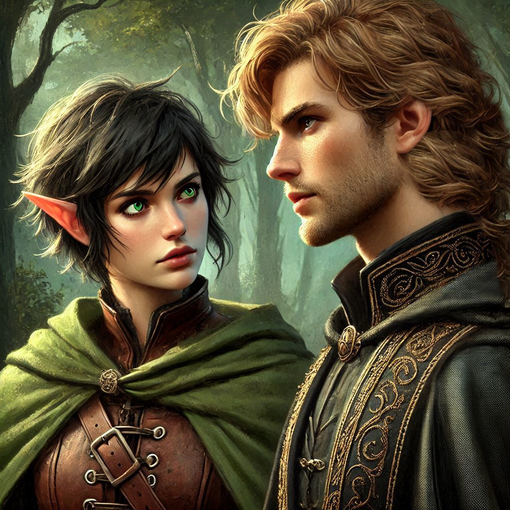

The Capture
You crouch behind a craggy rock at the entrance of Hemlock Caverns, heart racing as the wind howls through the trees behind you. Every muscle in your body is tense, waiting, listening. You’ve been tracking Jorsh for days now, his trail leading ever closer to this cursed place. Hemlock Caverns—the last place you want to be and the one place you must.
And there he is. Emerging from the dense forest, his dark cloak billowing behind him. Jorsh the Betrayer, the boy you once loved, now turned rogue sorcerer. The ache in your chest threatens to crack your focus, but you push it down. This isn’t the same boy you grew up with. This is the man who abandoned you—who is rumored to have consorted with dark magic, and who may hold the key to unraveling the entire kingdom.
You steady your breathing and spring your trap.
A snare tightens around his legs, pulling him off his feet and dragging him to the ground. He struggles for only a moment before your arrow is drawn, the sharp tip pointed directly at his throat.
"Jorsh," you say, stepping into view, your voice cold, detached, nothing like the emotions swirling inside you. "You're under arrest. Don't make this harder than it has to be."
He grins at you through the dirt on his face, not even a trace of surprise. "Kira," he says softly, as if you’re old friends reuniting over tea instead of enemies meeting on the battlefield. "You’ve gotten good."
You yank him to his feet, pushing him against the rocky face of the cavern entrance. He’s taller than you remember, his features sharper, hardened by time and whatever dark path he’s been walking.
“Why, Jorsh? Why did you leave us? Why all of this?” you ask, unable to keep the pain from leaking into your voice.
He doesn’t answer right away, studying your face with an intensity that makes you feel exposed. "I had no choice, Kira. My father’s death... it was no accident. They betrayed him. The Kingdom of Yew is rotting from the inside out."
"You became a traitor," you accuse, your grip tightening on his tunic.
"No." His eyes darken. "I became what was necessary to survive. To bring justice to those who wronged us."
You shove him away, frustration boiling over. "You studied dark magic, Jorsh! You consorted with demons—betrayed the kingdom!"
"And what about Varis?" he counters, stepping closer. "Do you even know the man you’re working for? The Minister of Trade is a dark elf from the Realm of Shadows, and he’s preparing to summon Yaldaboath, a demon lord, using your precious Onyx as the sacrifice."
Your blood turns cold at the mention of Onyx, your adoptive father's estranged friend. The dwarf is in danger, but you know better than to trust Jorsh. Yet his words strike a nerve. Could Varis truly be behind such a sinister plot? You had your suspicions, but nothing concrete.
"You're lying," you hiss, though doubt gnaws at the edges of your mind.
Jorsh’s eyes soften, his tone lowering to something almost tender. "I’m not. Kira, I’m trying to stop him. I need your help."
You flinch at the sincerity in his voice. He takes a step closer, eyes locked onto yours.
“You can bring me in. Turn me over to the kingdom, and they’ll execute me. Or… we can stop Varis together. You want justice? We can take it into our own hands. Destroy Varis. Steal Yaldaboath’s power for ourselves."
Your heart pounds. This is the same Jorsh who used to look at you like you were the only person in the world. The same Jorsh who broke your heart when he disappeared without a trace.
He reaches for your hand, gently taking it in his, his touch sending electricity through your skin. "Join me, Kira. Together, we can save Belladonna. We can bring down Varis. Don’t let them use you."
“And if I refuse?” You look past Jorsh and make eye contact with Baider, still hiding in the shadows. He raises his hammer and silently nods at you. You know the signal. Jorsh won’t stand a chance if you decide to arrest him.
“I’ve come this far. I cannot let Varis open the portal to the Nine Hells and invade Belladonna,” Jorsh says, squeezing your hand. “Join me. We were always meant to be together. But I’ll do it alone if I must.”
For a moment, the world stills. Everything hinges on this decision. Do you trust him, the boy you once loved but who has been walking a path of shadows? Or do you fulfill your duty as a ranger, bringing him to justice, no matter the cost?